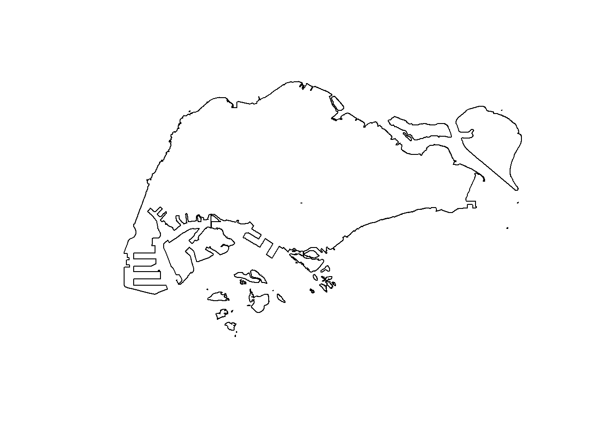
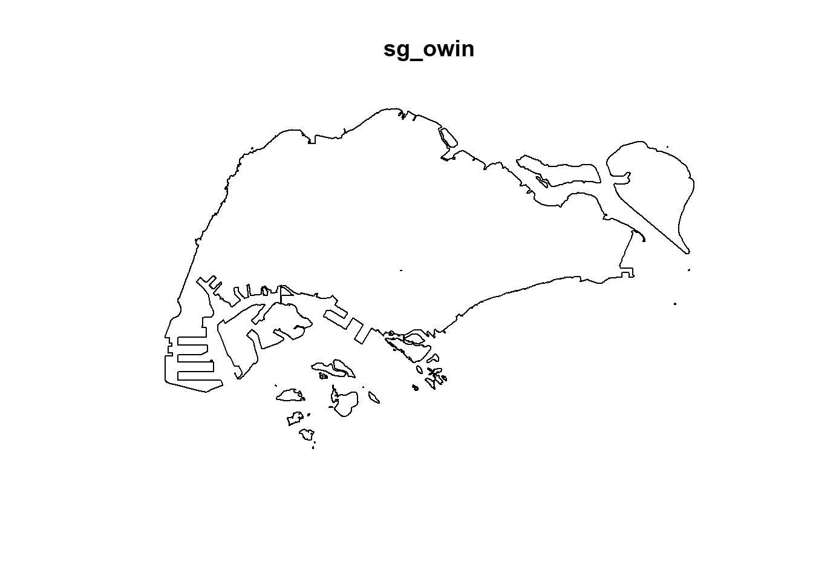

Show the code
pacman::p_load(maptools, sf, raster, spatstat, tmap, tidyverse)In this in-class exercise, we will be using the following packages:
pacman::p_load(maptools, sf, raster, spatstat, tmap, tidyverse)As there may be issues with installing maptools, you may use the following:
install.packages("maptools", repos = "https://packagemanager.posit.co/cran/2023-10-13")After that, you can rerun the first code block.
Import the data using the following:
mpsz_sf <- st_read(dsn='data/geospatial',
layer = 'MP14_SUBZONE_WEB_PL')Reading layer `MP14_SUBZONE_WEB_PL' from data source
`D:\KrisLBT\IS415-GAA\In-class_Ex\In-class_Ex03\data\geospatial'
using driver `ESRI Shapefile'
Simple feature collection with 323 features and 15 fields
Geometry type: MULTIPOLYGON
Dimension: XY
Bounding box: xmin: 2667.538 ymin: 15748.72 xmax: 56396.44 ymax: 50256.33
Projected CRS: SVY21childcare_sf <- st_read("data/geospatial/ChildCareServices.geojson")Reading layer `ChildCareServices' from data source
`D:\KrisLBT\IS415-GAA\In-class_Ex\In-class_Ex03\data\geospatial\ChildCareServices.geojson'
using driver `GeoJSON'
Simple feature collection with 1925 features and 2 fields
Geometry type: POINT
Dimension: XYZ
Bounding box: xmin: 103.6878 ymin: 1.247759 xmax: 103.9897 ymax: 1.462134
z_range: zmin: 0 zmax: 0
Geodetic CRS: WGS 84We notice that childcare_sf is in WGS 84. We can transform it using the following code block.
childcare_sf <- st_transform(childcare_sf, 3414)First, we can plot the Master Plan Subzone Boundary 2014
plot(mpsz_sf)
Then we can blend away the boundaries.
sg_sf <- mpsz_sf %>%
st_union()plot(sg_sf)
We use st_union() over st_combine() as st_union() will treat the output as a singular polygon while st_combine() will treat the individual subzones as their own polygon.
With that, we have made the CoastalOutline
We can use the more efficient as.ppp() method to convert to ppp.
childcare_ppp <- as.ppp(childcare_sf)summary(childcare_ppp)Marked planar point pattern: 1925 points
Average intensity 2.417323e-06 points per square unit
Coordinates are given to 3 decimal places
i.e. rounded to the nearest multiple of 0.001 units
marks are of type 'character'
Summary:
Length Class Mode
1925 character character
Window: rectangle = [11810.03, 45404.24] x [25596.33, 49300.88] units
(33590 x 23700 units)
Window area = 796335000 square unitssg_owin <- as.owin(sg_sf)plot(sg_owin)
From here on out, the steps are the same.
pg <- mpsz_sf %>%
filter(PLN_AREA_N == "PUNGGOL")
tm <- mpsz_sf %>%
filter(PLN_AREA_N == "TAMPINES")
ck <- mpsz_sf %>%
filter(PLN_AREA_N == "CHOA CHU KANG")
jw <- mpsz_sf %>%
filter(PLN_AREA_N == "JURONG WEST")Plotting
par(mfrow=c(2,2))
plot(pg, main= "Punggol")plot(tm, main = "Tampines")plot(ck, main = "Choa Chu Kang")plot(jw, main= "Jurong West")